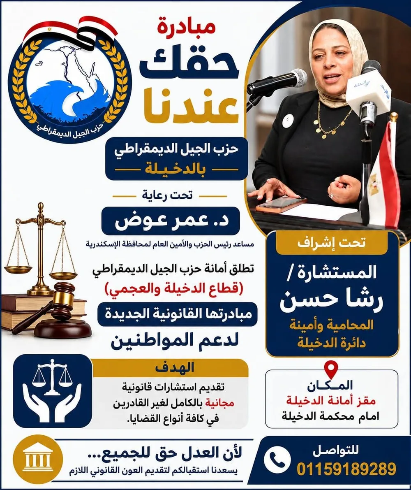

الأستاذة رشا حسن علي
المحامية بالاستئناف العالي ومجلس الدولة
متخصصة في قضايا الأسرة والاستشارات القانونية والمشكلات الأسرية والحلول الودية، مع خبرة في صياغة ومراجعة العقود والاتفاقات.
- المحامية بالاستئناف العالي ومجلس الدولة
- تخصص في قضايا الأسرة
- اهتمام بالحلول الودية
- الدخيلة • العامرية • الإسكندرية
ما المشكلة التي تواجهينها؟
اختاري الموضوع الأقرب إلى حالتك، وسيتم توجيهك مباشرة لبدء محادثة واتساب مخصصة بخصوصه.
كيف يمكننا مساعدتك؟
مجموعة من الخدمات القانونية المتخصصة في قضايا الأسرة، مصمَّمة لتضعك دائمًا على دراية بموقفك القانوني.
قضايا الأسرة
دراسة قضايا الأسرة والأحوال الشخصية بمختلف تفاصيلها، من منظور قانوني وإنساني في آن واحد.
تواصلي بخصوص هذه الخدمةالنفقة
المطالبة بالنفقة الزوجية ونفقة الصغار ومتجمد النفقة عبر المسار القانوني السليم.
تواصلي بخصوص هذه الخدمةالطلاق والخلع
توضيح الفروق بين المسارات المتاحة، ومرافقتك في اختيار الأنسب لحالتك.
تواصلي بخصوص هذه الخدمةالحضانة والرؤية والاستضافة
حفظ حق الأم في الحضانة، وتنظيم الرؤية والاستضافة بما يراعي مصلحة الأبناء.
تواصلي بخصوص هذه الخدمةتنفيذ الأحكام
متابعة إجراءات تنفيذ الأحكام الصادرة لصالحك عند امتناع الطرف الآخر.
تواصلي بخصوص هذه الخدمةالاستشارات القانونية
استشارات قانونية واضحة تساعدك على فهم موقفك قبل اتخاذ أي قرار.
تواصلي بخصوص هذه الخدمةالحلول الودية
دراسة إمكانية الوصول لتسوية ودية تحفظ حقوق الجميع قبل التصعيد.
تواصلي بخصوص هذه الخدمةالعقود والاتفاقات
صياغة ومراجعة العقود والاتفاقات والإقرارات المتعلقة بالحقوق الأسرية.
تواصلي بخصوص هذه الخدمةلست متأكدة من موقفك القانوني؟
استخدمي أداة "اكتشفي موقفك القانوني" التفاعلية — إجابات بسيطة تساعدك على فهم حالتك خلال دقيقة واحدة.
إنسانية في الفهم، دقيقة في القانون
تقدم الأستاذة رشا حسن علي خدمات قانونية واستشارات متخصصة مع اهتمام خاص بقضايا الأسرة والمشكلات التي تتطلب فهمًا دقيقًا للجانب القانوني والجانب الإنساني في الوقت نفسه، مع دراسة الخيارات القانونية والحلول الودية الممكنة وفق ظروف كل حالة.
تخدم الأستاذة رشا حسن علي موكلاتها في الدخيلة والعامرية والإسكندرية والمناطق المحيطة، وتحرص على أن تكون كل استشارة نقطة انطلاق واضحة نحو الحل الأنسب.
الأستاذة رشا حسن عليأساس الثقة
استئناف عالي ومجلس دولة
المحامية بالاستئناف العالي ومجلس الدولة.
اهتمام متخصص
اهتمام متخصص بقضايا الأسرة والمشكلات الأسرية.
فهم عملي
فهم عملي للمشكلات الأسرية وأبعادها الإنسانية.
الحلول الودية
دراسة الحلول القانونية والودية الممكنة لكل حالة.
خصوصية العميل
الحفاظ التام على خصوصية بيانات وتفاصيل حالتك.
سهولة التواصل
تواصل سريع وواضح عبر الهاتف أو واتساب.
ليس كل خلاف أسري يحتاج إلى نزاع طويل
عندما يكون الحل الودي ممكنًا ويحفظ الحقوق ويحقق مصلحة الأطراف، فقد يكون الوصول إلى تسوية مناسبة خطوة تستحق الدراسة قبل تصعيد النزاع.
- تقييم إمكانية التسوية قبل أي إجراء قضائي
- حفظ حقوق جميع الأطراف بما فيهم الأبناء
- توفير الوقت والجهد مقارنة بالتقاضي الطويل
صياغة ومراجعة العقود والاتفاقات
صياغة دقيقة أو مراجعة قانونية للعقود والاتفاقات والإقرارات، بما يحفظ حقوقك ويوضح التزامات كل طرف بشكل لا يحتمل اللبس.
- صياغة الاتفاقات والإقرارات
- مراجعة العقود قبل التوقيع
- التسويات الأسرية والاتفاقات المتعلقة بالحقوق الأسرية
خبرة ميدانية داخل أروقة القضاء
حضور ومرافعة أمام الجهات القضائية المختصة، بما يعكس فهمًا عمليًا لإجراءات التقاضي إلى جانب الجانب الاستشاري.

أمين دائرة الدخيلة بحزب الجيل الديمقراطي
إلى جانب عملها القانوني، تشغل الأستاذة رشا حسن علي منصب أمين دائرة الدخيلة بحزب الجيل الديمقراطي بالإسكندرية، وشاركت في مبادرات مجتمعية تُعنى بتقديم استشارات قانونية توعوية للمواطنين.
أحدث المقالات
محتوى قانوني وتوعوي حول قضايا الأسرة، يُحدَّث بشكل مستمر.
.
.
.
.
.
.
لديكِ سؤال قانوني؟
اختاري الموضوع وتواصلي مباشرة عبر واتساب.
أسئلة يتكرر طرحها
نعم، يحق لكل من الزوجة والأبناء المطالبة بالنفقة عبر رفع دعوى أمام المحكمة المختصة عند امتناع الملتزم عن الإنفاق أو عدم كفايته.
هل تريدين معرفة موقفك تحديدًا؟تختلف المستندات المطلوبة حسب نوع الدعوى، وبشكل عام تشمل ما يثبت العلاقة الأسرية والمستندات ذات الصلة بالموضوع. يُفضَّل مراجعة التفاصيل مباشرة لتحديد المستندات الدقيقة لحالتك.
هل تريدين معرفة موقفك تحديدًا؟الخلع لا يتطلب إثبات ضرر لكنه يستلزم تنازل الزوجة عن حقوقها المالية، بينما الطلاق للضرر يقوم على إثبات ضرر مع احتفاظ الزوجة بحقوقها المالية المقررة قانونًا في حال ثبوته.
هل تريدين معرفة موقفك تحديدًا؟للأطفال حقوق مستقلة تشمل النفقة والحضانة والرؤية، وتظل هذه الحقوق قائمة بصرف النظر عن الحالة الاجتماعية للوالدين.
هل تريدين معرفة موقفك تحديدًا؟الرؤية هي حق زيارة دورية دون مبيت، بينما قد تشمل الاستضافة مبيت الأبناء لدى الطرف غير الحاضن لفترة محددة، وتخضع كلتاهما لضوابط تراعي مصلحة الطفل.
هل تريدين معرفة موقفك تحديدًا؟تبدأ الإجراءات عادة بدراسة الموقف القانوني والمستندات المتاحة، ثم تحديد المسار الأنسب سواء كان تسوية ودية أو رفع دعوى أمام المحكمة المختصة.
هل تريدين معرفة موقفك تحديدًا؟في كثير من الحالات، نعم. فإذا كان الحل الودي يحفظ حقوق الأطراف كافة، فقد يكون خيارًا يستحق الدراسة قبل التصعيد لمسار التقاضي.
هل تريدين معرفة موقفك تحديدًا؟في حال امتناع الطرف الآخر عن تنفيذ حكم صادر لصالحك، يمكن اتخاذ إجراءات التنفيذ الجبري المقررة قانونًا لضمان الحصول على حقك.
هل تريدين معرفة موقفك تحديدًا؟تفضلي بزيارتنا
يقع المكتب في الدخيلة، ويسهل الوصول إليه من العامرية ووسط الإسكندرية.